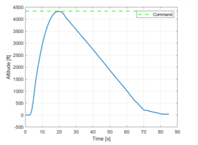
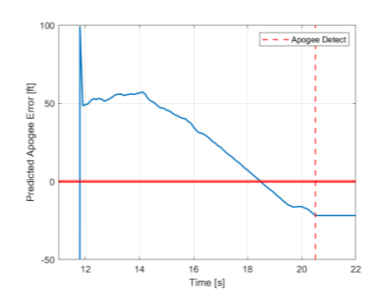
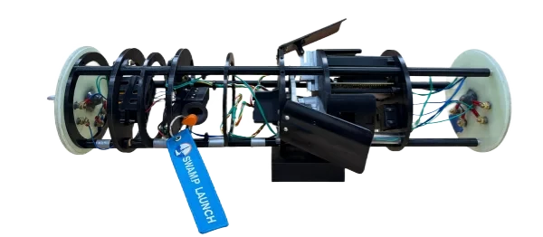
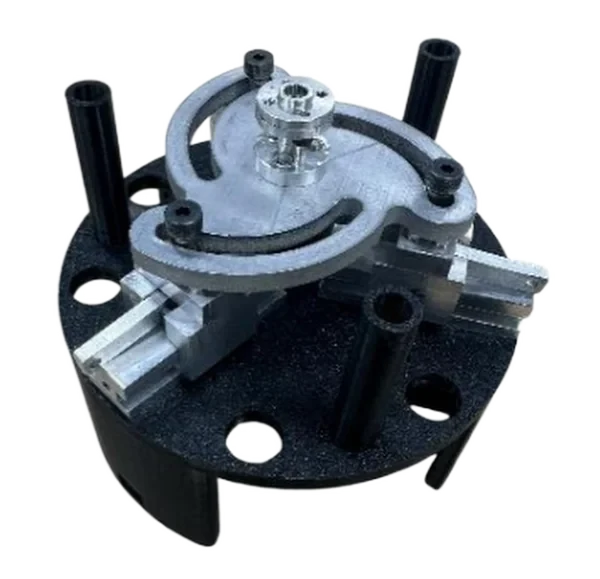

Apogee control airbrake for Project TerraGator
Apogee control system for a NASA Student Launch rocket: dead reckoning and inertial navigation, Kalman-filter sensor fusion, PID control, FEA, and CNC manufacturing.
- Role
- Guidance, navigation, and controls lead
- Team
- Swamp Launch Rocket Team, University of Florida
- Supervisor
- Dr. Sean R. Niemi
- Period
- Fall 2025 to Spring 2026
- Tools
- MATLAB, Simulink, C++, Fusion, SolidWorks, Ansys Mechanical
Overview
Part of the criteria for the NASA USLI 2026 competition was to get as close to the apogee declared during CDR as possible. I was in charge of the Apogee Control System (ACS), designing, building, and manufacturing every aspect of the system across GNC, software, electrical, and mechanical engineering. We completed three successful flights within 20 ft of our target apogee and placed 5th at the 2026 NASA USLI competition.
Guidance, navigation, and control
- Built a dead-reckoning inertial-navigation stack in which the IMU propagated motion between updates for position and attitude.
- Fused barometric altitude and inertial measurements with a Kalman filter to estimate position and velocity.
- Designed and tuned the PID controller that commanded the airbrake to control apogee, using MATLAB and Simulink simulations before implementing it on the flight computer.
Software and electrical
- Built the flight computer around a Teensy 4.1 with C++ drivers for the IMU and barometer.
- Implemented the sensor-fusion pipeline and a finite-state machine for launch, ascent, apogee, descent, and landing detection.
- Integrated the navigation estimates with the airbrake actuation and PID control loop for autonomous flight operation.
Mechanical design, analysis, and manufacturing
- Designed the Apogee Control System airbrake mechanism in Fusion and SolidWorks.
- Performed finite-element analysis, including static-load and modal analysis, to verify structural integrity during actuation.
- Manufactured components on the lathe, mill, CNC, and waterjet.
Results







